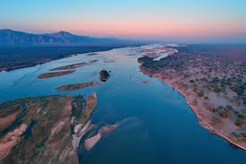
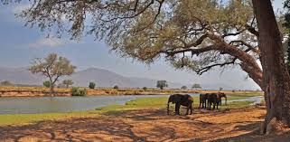
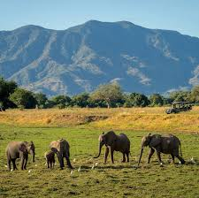
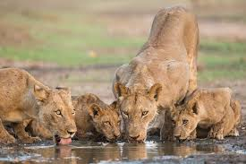
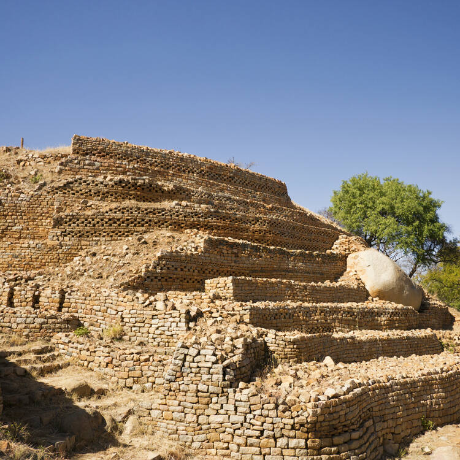
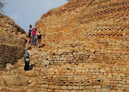
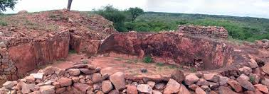
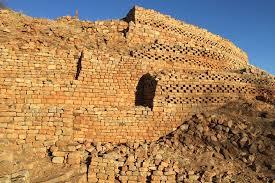

The Mana Pools National Park, Sapi and Chewore Safari Areas World Heritage Site is an area of dramatic landscape and ecological processes. Physically protected by the Zambezi River to the north and the steep escarpment (which rises to over 1,000 m from the valley floor) to the south, this substantial property of 676,600 ha provides shelter for immense congregations of Africa’s large mammal populations which concentrate in its flood plains. The Mana Pools are former channels of the Zambezi River, and ongoing geological processes present a good example of erosion and deposition by a large seasonal river including a clear pattern of plant succession on its alluvial deposits. While black rhino has disappeared since the property’s inscription, huge herds of elephant and buffalo, followed by zebra, waterbuck and many other antelope species and their associated predators including lion and hyena migrate to the area each year during the dry winter months. The river is also famous for its sizeable numbers of hippopotamus and Nile crocodile. Resident and migratory birdlife, with over 450 species recorded, is also abundant. Controlled hunting on quota is permitted in the safari areas. Criterion (vii): The annual congregation of animals in riparian parkland alongside the broad Zambezi constitutes one Africa's outstanding wildlife spectacles. Criterion (ix): The 'sand-bank' environment constitutes a good example of erosion and deposition by a large seasonal river (despite changes in river flow due to the Kariba Dam). There is a clear pattern of vegetation succession on the alluvial deposits. Seasonal movements of large mammals within the valley are of great ecological interest both because of interspecies and intraspecies differences.
Read more    Khami Ruins National Monument is located to the west of the Khami River, 22 km from the City of Bulawayo. The property, located on a 1300 m hilltop downstream from a dam built during 1928-1929, covers an area of about 108 ha, spread over a distance of about 2 km from the Passage Ruin to the North Ruin. The property was the capital of the Torwa dynasty, which arose from the collapse of the Great Zimbabwe Kingdom between 1450 -1650 and was abandoned during the Ndebele incursions of the 19th century. It is composed of a complex series of platforms of dry-stone walled structures, emulating a later development of Stone Age culture. The chief’s residence (Mambo) was located towards the north on the Hill Ruin site with its adjacent cultivation terraces. The population lived in daga huts of cobwork, surrounded by a series of granite walls. These structures display a high standard of workmanship, a great number of narrow passageways and perambulatory galleries and impressive chevron and chequered wall decorations. Khami conforms to Great Zimbabwe in a number of archaeological and architectural aspects but it possesses certain features particular to itself and its successors such as Danangombe and Zinjanja. Revetments or retaining walls found expression for the first time in the architectural history of the sub-region at Khami, and with it were elaborate decorations; it still has the longest decorated wall in the entire sub-region. The architecture of the site and the archaeological artefacts provide evidence for an exceptional understanding of strong, united, early civilizations. They also offer information on the property’s complex socio-economic, religious and spiritual significance for the local communities and for the overall chronological development of Zimbabwe tradition; initiated in Mapungubwe (South Africa), extending to Great Zimbabwe, and through the emergence of later states. The archaeological remains are also a testament to long-distance historic trade links with the Portuguese, and the wider world, the diverse range of imported artefacts provide evidence of 15th and 17th century Spanish porcelain, Rhineland stoneware and Ming porcelain, many of which are on display in the Museum of Natural History in Bulawayo. There is also a monumental granite cross which illustrates the contact with missionaries at a traditionally revered and sacred spiritual site.
Read more    